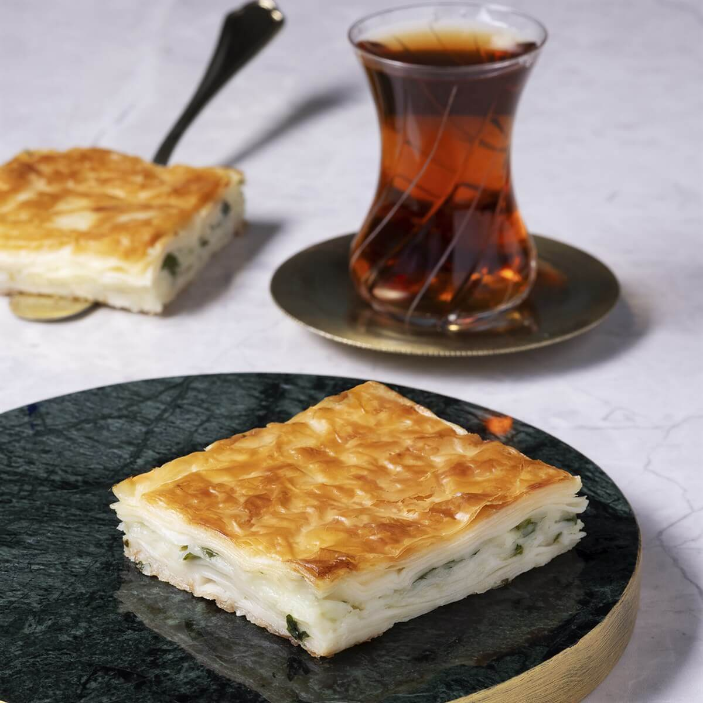
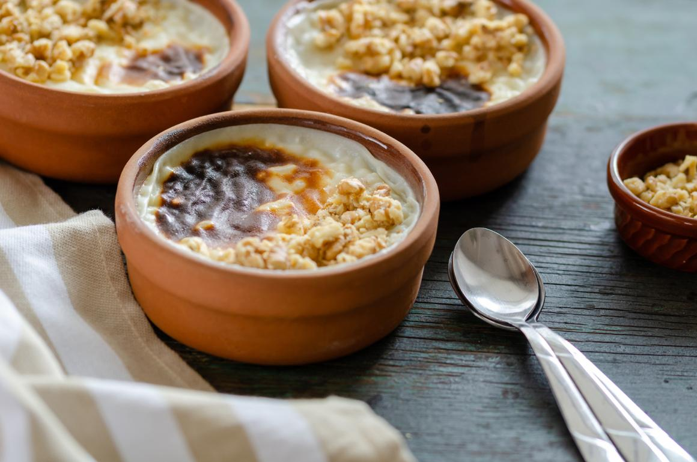

Iskender Kebab
Zarte Fleischscheiben, serviert mit Joghurt und Tomatensoße auf einem flachen Brot, übergossen mit heißer Butter. Sehr beliebt in Bursa.

Ein würziger Kebab aus Adana, hergestellt aus gehacktem Lammfleisch und Gemüse, das auf einem Spieß gegrillt wird. Ein perfektes Gericht für Fleischliebhaber.
Zarte Fleischscheiben, serviert mit Joghurt und Tomatensoße auf einem flachen Brot, übergossen mit heißer Butter. Sehr beliebt in Bursa.
Ein köstliches Gericht aus Bulgur, das mit einer Mischung aus Hackfleisch, Zwiebeln, Gewürzen und Nüssen gefüllt wird. Diese werden frittiert oder im Wasser gekocht.

Ein erfrischender Bulgursalat mit frischen Kräutern, Tomaten, Gurken und einer Zitronen-Olivenöl-Vinaigrette. Variationen können Granatapfelsirup oder Joghurt enthalten.
Ein Gebäck aus Yufka-Teig, das mit Käse, Hackfleisch, Spinat oder Kartoffeln gefüllt ist. Varianten wie "Su Böreği" oder "Sigara Böreği" existieren.
Ein Gericht aus einer Ofenkartoffel, gefüllt mit einer Vielzahl von Zutaten wie Käse, Butter, Wurst, Mais, Oliven und verschiedenen Saucen.
Gefüllte Auberginen mit einer Mischung aus Hackfleisch, Zwiebeln, Tomaten und Gewürzen, im Ofen gebacken.
Gefüllte Auberginen mit einer Mischung aus Zwiebeln, Knoblauch, Tomaten und Gewürzen. Unterschied zum Karnıyarık ist dass kein Fleisch drin ist, und dass es kalt serviert wird.

Lammfleisch, das mit einer cremigen Auberginenpüree serviert wird. Die Auberginen werden gegrillt oder geröstet und dann püriert.
Ein klassisches Gericht mit weißen Bohnen, in einer Tomatensauce gekocht, und serviert mit Reis.
Kleine Teigtaschen, gefüllt mit Hackfleisch, serviert mit Joghurt und Paprikabutter oder Tomatensauce.

Gefüllte Gemüse, insbesondere Weinblätter, Auberginen, Paprikaarten, Zwiebel oder sogar Melonen. Die Füllung besteht aus Reis, Kräutern und Gewürzen.
Ein süßes Gebäck aus dünnen Teigblättern (Yufka), gefüllt mit gehackten Nüssen wie Walnüssen oder Pistazien, übergossen mit Zuckersirup.
• Pistazien-Baklava
• Walnuss-Baklava

Ein süßes, cremiges Dessert aus Weizen, Kichererbsen, Datteln, Rosinen und Nüssen. Traditionell während des Monats Muharrem serviert.
Manchmal verfeinert mit Granatapfel, Zimt oder Kokosnuss.
Eine zuckrige, faserige Süßigkeit, die wie Zuckerwatte aussieht, aber aus Zucker, Mehl, Butter und Vanille zubereitet wird.
• Mit Nüssen
• Mit Kakao

Ein heißes Dessert aus feinen Fäden (Kadayıf), die mit geschmolzenem Käse gefüllt und goldbraun gebacken werden. Mit süßem Sirup übergossen und oft mit Pistazien garniert.

Türkischer Milchreis, der im Ofen gebacken wird, bis er eine karamellisierte Oberfläche bekommt. Traditionell mit Zimt oder Mandeln garniert.
Eine süße, gummiartige Süßigkeit aus Zucker, Stärke und Wasser, die oft mit Aromen wie Rosenwasser, Zitronen oder Pistazien verfeinert wird.
• Rosen-Lokum (mit Rosenwasser)
• Pistazien-Lokum (mit gehackten Pistazien)
• Zitronen-Lokum (mit Zitronenaroma)
• Klassischer Lokum (einfach süß und fruchtig)